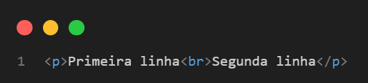
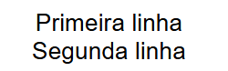
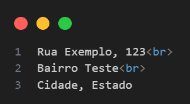
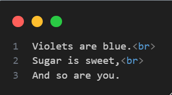

A tag <br> Quebra de linha no HTML5
A tag <br> no HTML5 é usada para inserir quebras de linha no conteúdo, ou seja, para forçar o texto a continuar na linha de baixo. É uma tag vazia, o que significa que não tem uma tag de fechamento.
Exemplo
Resultado do exemplo
Características principais
- Não tem fechamento: Não se usa
</br>. - Não adiciona espaço entre as linhas como um
<p>, apenas quebra a linha. - Usada para quebras de linha simples, não para parágrafos ou espaçamentos maiores.
Quando usar
- Em endereços: 
-
Em poesias ou letras de música, onde as quebras de linha fazem parte do formato:
Roses are red,

Quando evitar
-
Evite usar
<br>para criar espaçamento entre blocos de conteúdo. Para isso, prefira CSS ou elementos como<p>,<div>e margens. -
Evite usar em excesso. Muitos
<br>em sequência (como<br><br><br>) são considerados má prática — prefira usar CSS para controlar o layout.